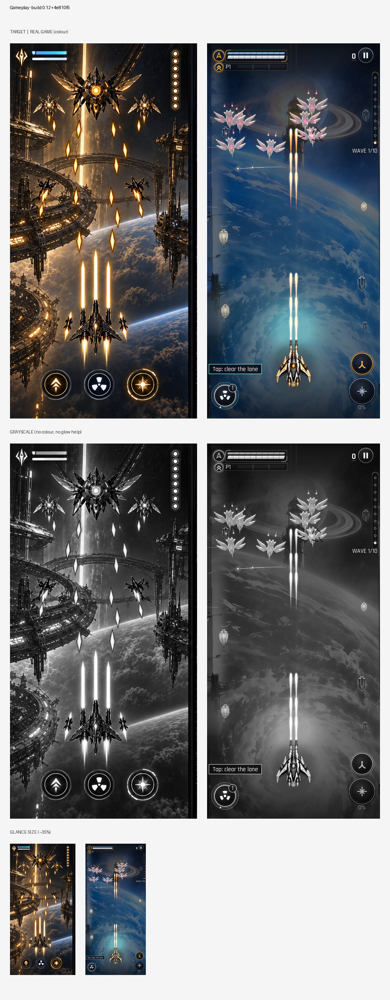
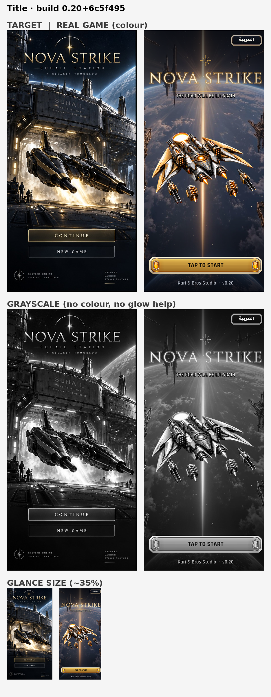
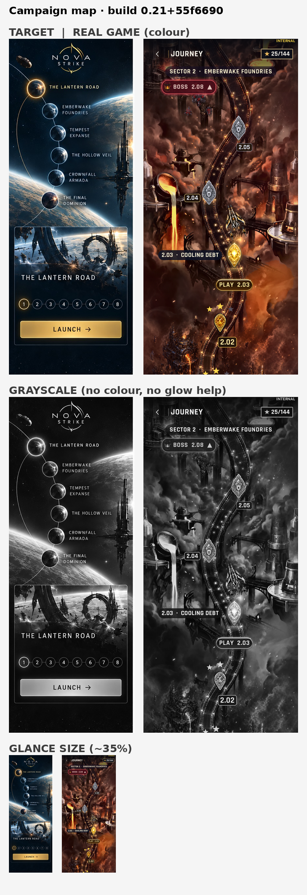
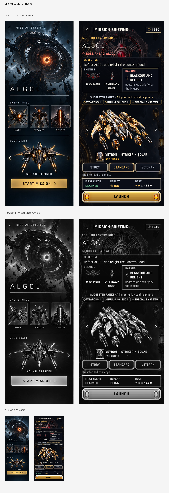
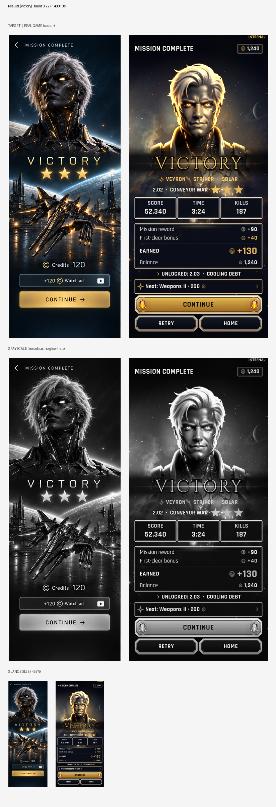
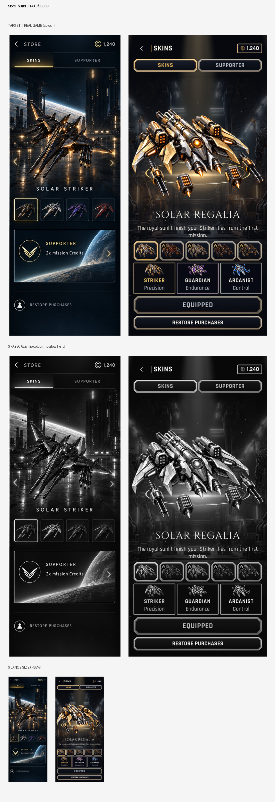
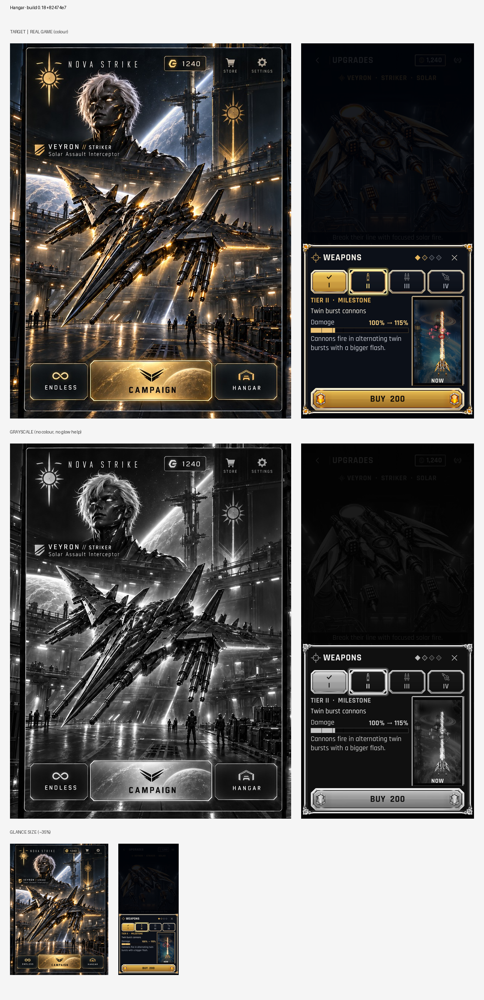
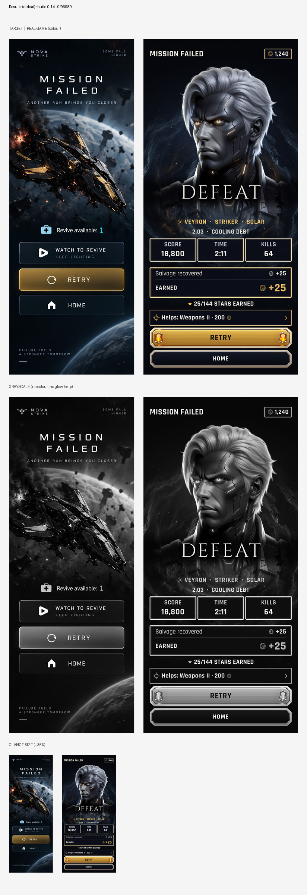
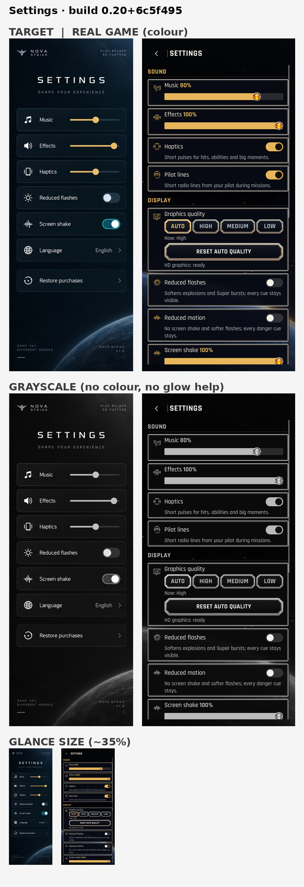

build.json · automated checks for build 0.23+9012acf
Automated: measured from 3 bot run(s) (event logs). Targets: config/build_checks.json feel.targets (+ studio defaults). It shows pacing and systems working; it does not show that a person finds it fun.
| Target | Threshold | Passing runs | Unknown | Median |
|---|---|---|---|---|
| Empty screen time (share of play) | ≤ 0.1 | 3/3 ✅ | 0 | 0.01 |
| Longest empty gap (s) | ≤ 3.0 | 3/3 ✅ | 0 | 1.0 |
| Empty gaps over 2 s | ≤ 1 | 3/3 ✅ | 0 | 0 |
| Time to first power-up P2 (s) | ≤ 30.0 | 3/3 ✅ | 0 | 11.7 |
| Time at top power level (share) | ≥ 0.2 | 2/3 ⚠️ | 0 | 0.21 |
| Pickups collected (share) | ≥ 0.7 | 3/3 ✅ | 0 | 0.96 |
| Bot deaths | ≤ 0 | 3/3 ✅ | 0 | 0 |
| Mean enemies on screen | ≥ 2.0 | 3/3 ✅ | 0 | 3.21 |
Unknown checks: 0 (none)
| Run | Unit | Result | Play s | Empty % | Longest gap | Gaps>2s | → P2 s | Time at P1/P2/P3/P4 % | Pickups | Mean enemies | Supers | Fails |
|---|---|---|---|---|---|---|---|---|---|---|---|---|
| 1.01 | arcanist | victory | 85.0 | 1 | 1.0 | 0 | 11.7 | 14/24/37/25 | 95% | 3.6 | 4 | – |
| 1.05 | striker | victory | 86.6 | 1 | 1.1 | 0 | 10.4 | 12/40/26/21 | 98% | 3.21 | 3 | – |
| 2.01 | striker | victory | 83.4 | 0 | 0.0 | 0 | 13.0 | 16/26/40/18 | 96% | 2.58 | 3 | Time at top power level (share) |
Automated: each capture from this build beside its visual-bible target (sheets below), with measured differences. The numbers flag drift; they don't judge quality. Look at the sheets.
| # | Screen | Lightness (build / target) | Contrast | Colourfulness | Dark share | Highlights | Drift flags | Sheet |
|---|---|---|---|---|---|---|---|---|
| 1 | Gameplay | 22.6 / 26.5 | 13.2 / 21.2 | 14.6 / 12.0 | 0.48 / 0.48 | 0.01 / 0.03 | flatter | art_01.png |
| 2 | Title | 28.9 / 21.1 | 23.0 / 24.5 | 11.0 / 7.1 | 0.46 / 0.67 | 0.03 / 0.05 | – | art_02.png |
| 3 | Campaign map | 24.7 / 22.3 | 21.4 / 26.0 | 20.8 / 10.2 | 0.55 / 0.67 | 0.02 / 0.05 | more saturated, missing highlights/glow | art_03.png |
| 4 | Briefing | 12.4 / 16.6 | 21.5 / 20.8 | 7.3 / 8.6 | 0.85 / 0.76 | 0.01 / 0.03 | – | art_04.png |
| 5 | Results (victory) | 22.3 / 22.0 | 25.4 / 24.4 | 9.9 / 9.3 | 0.63 / 0.66 | 0.04 / 0.05 | – | art_05.png |
| 6 | Store | 16.2 / 15.0 | 20.0 / 20.2 | 5.7 / 6.8 | 0.76 / 0.79 | 0.03 / 0.03 | – | art_06.png |
| 7 | Hangar | 19.4 / 25.6 | 24.3 / 22.2 | 7.5 / 8.5 | 0.68 / 0.52 | 0.03 / 0.03 | – | art_07.png |
| 8 | Results (defeat) | 17.0 / 14.8 | 23.7 / 18.9 | 7.0 / 7.2 | 0.75 / 0.75 | 0.03 / 0.02 | – | art_08.png |
| 9 | Settings | 7.5 / 8.9 | 15.7 / 12.5 | 4.7 / 7.9 | 0.89 / 0.93 | 0.01 / 0.01 | less colourful | art_09.png |
| Screen | Build | Target |
|---|---|---|
| Gameplay | #283a50 #0e1e31 #374a5e #172539 #252a37 #616f74 | #131215 #504135 #765e4a #262220 #37291f #b9a080 |
| Title | #13141a #47464e #2f2c30 #1f242f #756c6a #d7b784 | #2e2d2d #05070c #0b1017 #18181b #605c56 #bbb3a4 |
| Campaign map | #1c0e0e #573025 #421d17 #2f1714 #865038 #cc9e64 | #030d16 #202e39 #0b161e #616d71 #03121e #c7bea7 |
| Briefing | #100e13 #07090f #0a0a0f #2b2121 #a4885f #05080e | #040b12 #1b2128 #081119 #3d3f44 #111317 #9c927c |
| Results (victory) | #0b0e17 #393432 #15141a #7a6952 #060810 #c4ae7e | #2a2e31 #050e16 #0c141b #171718 #5e5e5d #c3b496 |
| Store | #06080e #181d26 #121216 #3e3a37 #2b2725 #958977 | #171d22 #050f17 #0b1117 #030b12 #373839 #908e89 |
| Hangar | #030409 #2b2b2c #121114 #09090d #5d5852 #bda679 | #0e0f10 #473f38 #2b2723 #706254 #1b1e20 #b8a48a |
| Results (defeat) | #05070c #0a0d15 #10141b #5a5754 #20242c #aea085 | #04090e #0a0e13 #0c171f #3a3d3f #1c2128 #81827e |
| Settings | #03050a #101621 #010103 #020306 #06080e #54575b | #08161e #0a1822 #030b13 #06111a #031018 #313f49 |
Target: every role pair ≥ 25.0.
| Roles | Closest pair ΔE | Result |
|---|---|---|
| enemy vs background | 6 | ⚠️ too close |
| enemy_bullets vs background | 50 | ✅ |
| enemy_bullets vs player_bullets | 27 | ✅ |
| enemy_bullets vs enemy | 36 | ✅ |
| player_bullets vs background | 42 | ✅ |








